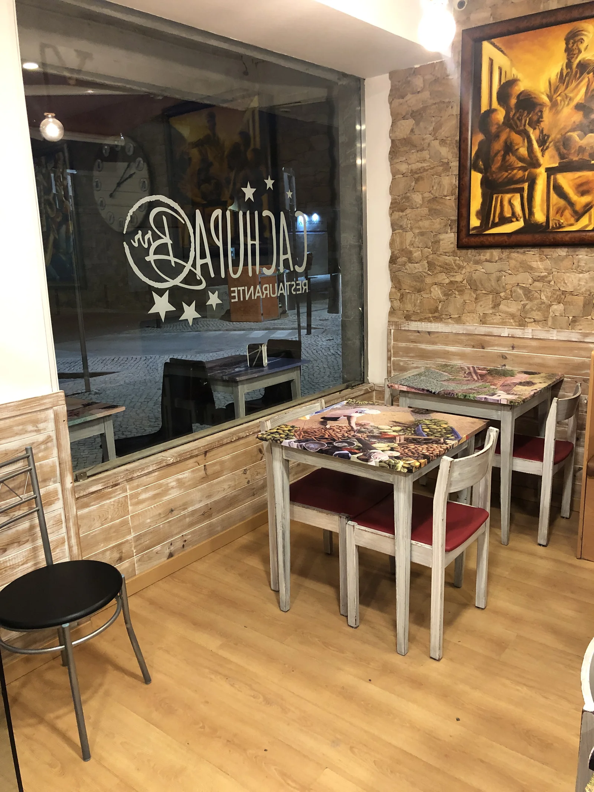

Contactos
Encontre a nossa casa.
Localização, horários e contactos da nossa casa no Barreiro.
Localização
R. Alm. Reis 22 B, 2830-326 Barreiro
Barreiro · Margem Sul · Portugal
Abrir no Google Maps
Contacto direto
963 572 411Horário semanal
- Segunda-feira
- 11:00–23:00
- Terça-feira
- 11:00–23:00
- Quarta-feira
- 11:00–23:00
- Quinta-feira
- 11:00–23:00
- Sexta-feira
- 11:00–23:00
- Sábado
- 11:00–23:00
- Domingo
- 11:00–23:00